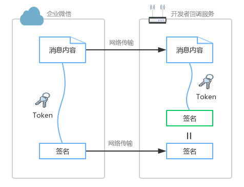

目录
1. 什么时候需要回调服务
在集成企业微信与内部系统时，我们往往需要搭建一个回调服务。回调服务，可以实现：
- 自定义丰富的服务行为。比如，用户向应用发消息时，识别消息关键词，回复不同的消息内容；用户点击应用菜单时，转化为指令，执行自动化任务。
- 可以及时获取到状态变化。比如，通讯录发生变化时，不需要定时去拉取通讯录对比，而是实时地获取到变化的通讯录节点，进行同步。
2. 回调服务需要哪些配置
首先，URL为回调服务地址，由开发者搭建（需要满足接口要求，参考第3部分说明），用于接收通知消息或者事件。
其次，Token用于计算签名，由英文或数字组成且长度不超过32位的自定义字符串。开发者提供的URL是公开可访问的，这就意味着拿到这个URL，就可以往该链接推送消息。那么URL服务需要解决两个问题：
- 如何分辨出是否为企业微信来源
- 如何分辨出推送消息的内容是否被篡改
通过数字签名就可以解决上述的问题。具体为：约定Token作为密钥，仅开发者和企业微信知道，在传输中不可见，用于参与签名计算。企业微信在推送消息时，将消息内容与Token计算出签名。开发者接收到推送消息时，也按相同算法计算出签名。如果为同一签名，则可信任来源为企业微信，并且内容是完整的。
- 如果非企业微信来源，由于攻击者没有正确的Token，无法算出正确的签名；
- 如果消息内容被篡改，由于开发者会将接收的消息内容与Token重算一次签名，该值与参数的签名不一致，则会拒绝该请求。

3. 回调服务需要实现哪些功能
配置回调服务时，需要能同时支持HttpGet以及HttpPost两种能力，
- 企业微信会先判断URL服务是否具备解析企业微信推送消息的能力。
具体方式是，企业微信往URL服务上发一条Get请求带签名及密文参数到URL服务上，如果URL服务检查签名通过，并能正确返回密文参数对应的明文字符串，则验证通过。此时在企业微信的配置就开始生效。 - 后续的业务请求（比如应用菜单的点击事件，用户消息等），都会类似的方式（签名+密文）向服务URL推送消息。URL服务验证签名通过后，需要将POST数据解密，就可以得到对应的业务消息明文。

3.1 支持Http Get请求验证URL有效性
假设企业的接收消息的URL设置为https://api.3dept.com。
企业管理员在保存回调配置信息时，企业微信会发送一条验证消息到填写的URL，请求内容如下：
请求方式：GET
请求地址：https://api.3dept.com/?msg_signature=ASDFQWEXZCVAQFASDFASDFSS×tamp=13500001234&nonce=123412323&echostr=ENCRYPT_STR
参数说明：
| 参数 | 类型 | 说明 |
|---|---|---|
| msg_signature | String | 企业微信加密签名，msg_signature计算结合了企业填写的token、请求中的timestamp、nonce、加密的消息体。签名计算方法参考 消息体签名检验 |
| timestamp | Integer | 时间戳。与nonce结合使用，用于防止请求重放攻击。 |
| nonce | String | 随机数。与timestamp结合使用，用于防止请求重放攻击。 |
| echostr | String | 加密的字符串。需要解密得到消息内容明文，解密后有random、msg_len、msg、receiveid四个字段，其中msg即为消息内容明文 |
回调服务需要作出正确的响应才能通过URL验证，具体操作如下：
- 对收到的请求，解析上述的各个参数值（参数值需要做Urldecode处理）
- 根据已有的token，结合第1步获取的参数timestamp, nonce, echostr重新计算签名，然后与参数msg_signature检查是否一致，确认调用者的合法性。计算方法参考：消息体签名检验
- 解密echostr参数得到消息内容（即msg字段）
- 在1秒内响应GET请求，响应内容为上一步得到的明文消息内容（不能加引号，不能带bom头，不能带换行符）
步骤2~3可以直接使用验证URL函数一步到位。
你可以访问 接口调试工具 （接口类型：建立连接，接口列表：测试回调模式）进行调试
3.2 支持Http Post请求接收业务数据
假设企业的接收消息的URL设置为https://api.3dept.com。
当用户触发回调行为时，企业微信会发送回调消息到填写的URL，请求内容如下：
请求方式：POST
请求地址 ：https://api.3dept.com/?msg_signature=ASDFQWEXZCVAQFASDFASDFSS×tamp=13500001234&nonce=123412323
接收数据格式 ：
<xml> <ToUserName><![CDATA[toUser]]></ToUserName> <AgentID><![CDATA[toAgentID]]></AgentID> <Encrypt><![CDATA[msg_encrypt]]></Encrypt> </xml>点击复制
参数说明：
| 参数 | 类型 | 说明 |
|---|---|---|
| msg_signature | String | 企业微信加密签名，msg_signature结合了企业填写的token、请求中的timestamp、nonce参数、加密的消息体 |
| timestamp | Integer | 时间戳。与nonce结合使用，用于防止请求重放攻击。 |
| nonce | String | 随机数。与timestamp结合使用，用于防止请求重放攻击。 |
| ToUserName | String | 企业微信的CorpID，当为第三方应用回调事件时，CorpID的内容为suiteid |
| AgentID | String | 接收的应用id，可在应用的设置页面获取。仅应用相关的回调会带该字段。 |
| Encrypt | String | 消息结构体加密后的字符串 |
企业收到消息后，需要作如下处理：
- 对msg_signature进行校验
- 解密Encrypt，得到明文的消息结构体（消息结构体后面章节会详说）
- 如果需要被动回复消息，构造被动响应包
- 正确响应本次请求
· 企业微信服务器在五秒内收不到响应会断掉连接，并且重新发起请求，总共重试三次。（仅针对网络连接失败或者网络请求超时情况重试，建议开发者接受回调后立即应答，业务异步处理。目前无法保证100%回调成功，若开发者服务失败过多或者超时过多，企业微信可能会根据回调情况丢弃一些回调事件。建议开发者不要强依赖回调，需要额外机制对齐相关业务数据）
步骤1~2可以直接使用解密函数一步到位。
步骤3其实包含加密被动回复消息、生成新签名、构造被动响应包三个步骤，可以直接使用加密函数一步到位。
步骤4中，不同的业务回调要求返回不同内容。比如回复空串，或者特定字符串（如success），以及上一步构造的加密被动回复消息。具体要求在各个回调业务文档会有说明。
被动响应包的数据格式：
<xml> <Encrypt><![CDATA[msg_encrypt]]></Encrypt> <MsgSignature><![CDATA[msg_signature]]></MsgSignature> <TimeStamp>timestamp</TimeStamp> <Nonce><![CDATA[nonce]]></Nonce> </xml>点击复制
参数说明
| 参数 | 是否必须 | 说明 |
|---|---|---|
| Encrypt | 是 | 经过加密的消息结构体 |
| MsgSignature | 是 | 消息签名 |
| TimeStamp | 是 | 时间戳 |
| Nonce | 是 | 随机数，由企业自行生成 |
3.3 获取企业微信服务器的ip段
企业微信在回调企业指定的URL时，是通过特定的IP发送出去的。如果企业需要做防火墙配置，那么可以通过这个接口获取到所有相关的IP段。IP段有变更可能，当IP段变更时，新旧IP段会同时保留一段时间。建议企业每天定时拉取IP段，更新防火墙设置，避免因IP段变更导致网络不通。
请求方式：GET（HTTPS）
请求地址： https://qyapi.weixin.qq.com/cgi-bin/getcallbackip?access_token=ACCESS_TOKEN （获取ACCESS_TOKEN）
请求参数说明：
| 参数 | 必须 | 说明 |
|---|---|---|
| access_token | 是 | 调用接口凭证 |
权限说明：
无限定。
返回结果：
{ "ip_list":[ "1.2.3.4", "2.3.3.3" ], "errcode":0, "errmsg":"ok" }点击复制
返回参数说明：
| 参数 | 类型 | 说明 |
|---|---|---|
| ip_list | StringArray | 企业微信服务器IP段 |
| errcode | int | 错误码，0表示成功，非0表示调用失败 |
| errmsg | string | 错误信息，调用失败会有相关的错误信息返回 |
根据errcode值非0，判断调用失败。以下是access_token过期的返回示例：
{ "ip_list":[], "errcode":42001, "errmsg":"access_token expired, hint: [1576065934_28_e0fae07666aa64636023c1fa7e8f49a4], from ip: 9.30.0.138, more info at https://open.work.weixin.qq.com/devtool/query?e=42001" }点击复制
4. 回调服务demo
开发者可参考 加解密库下载与返回码 实现